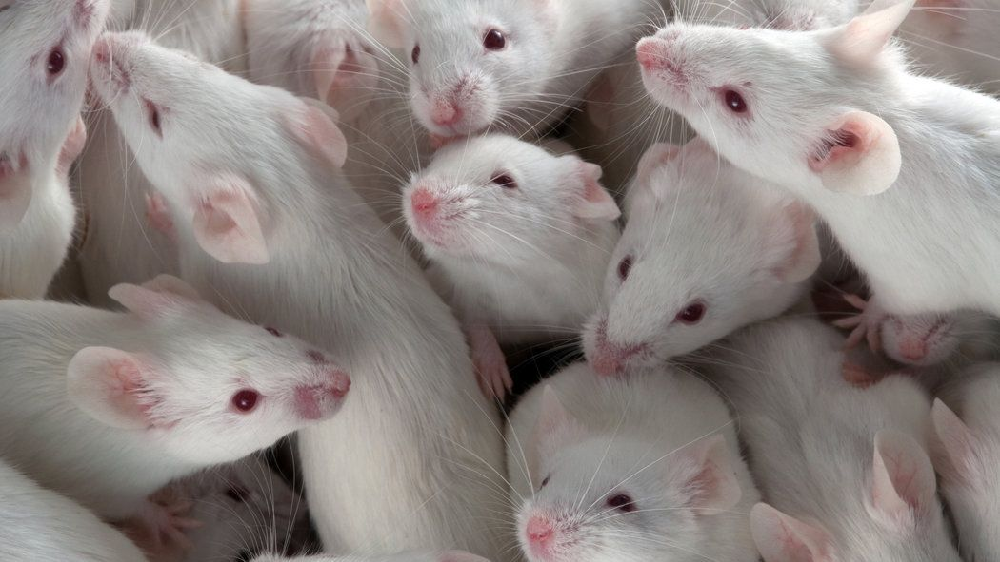
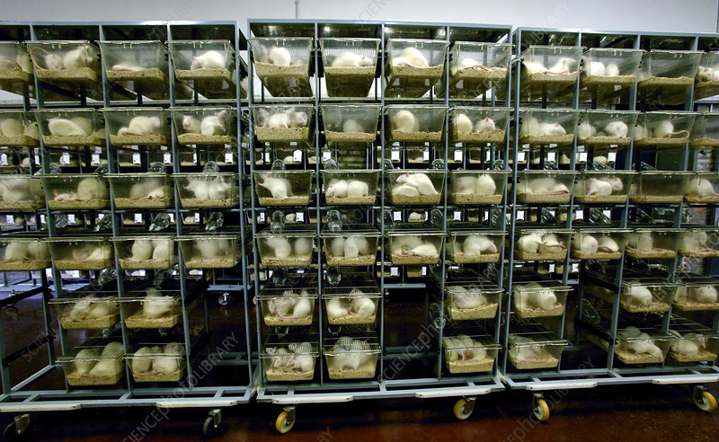
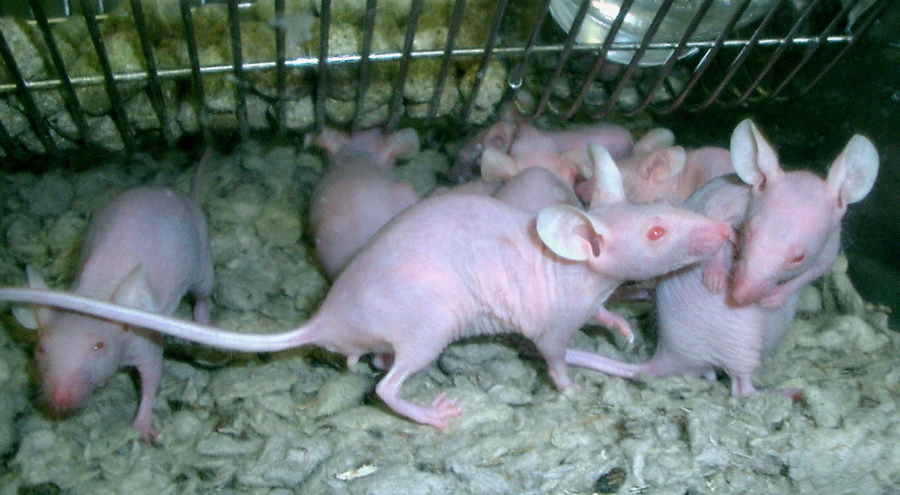
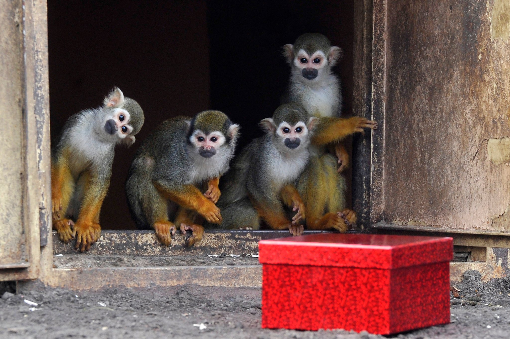
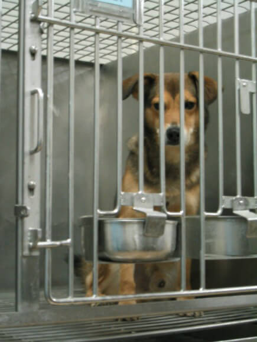
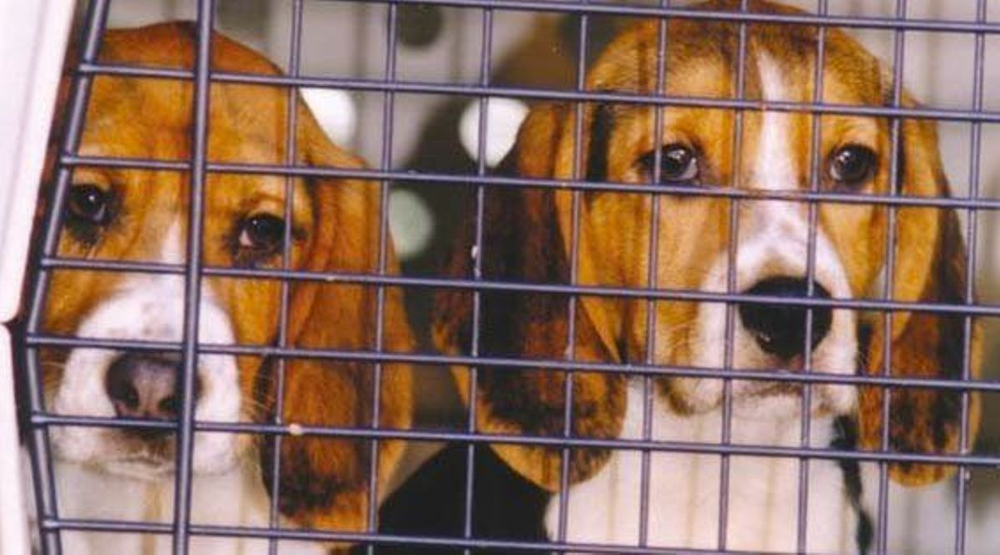
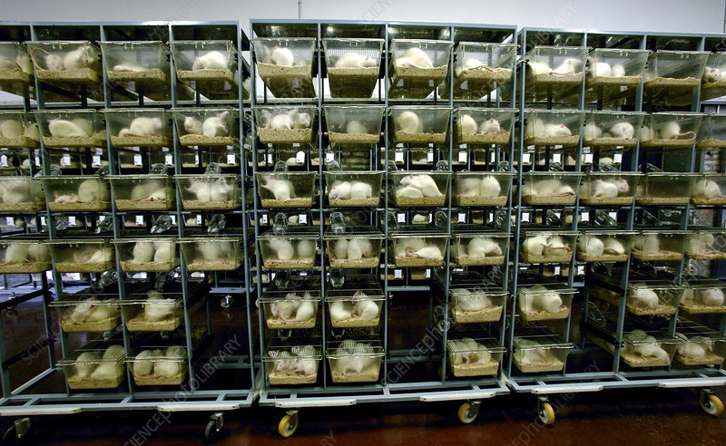
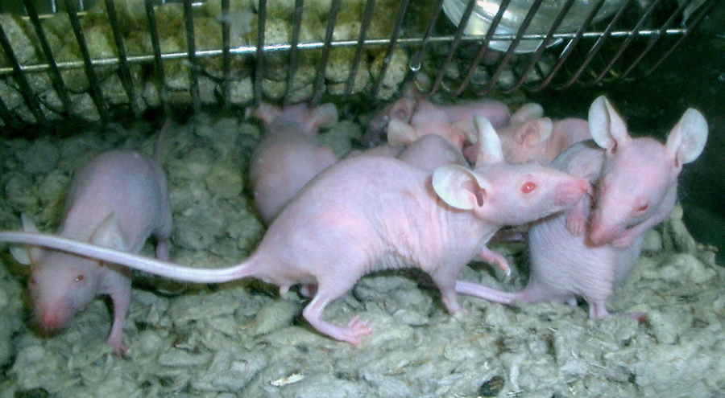
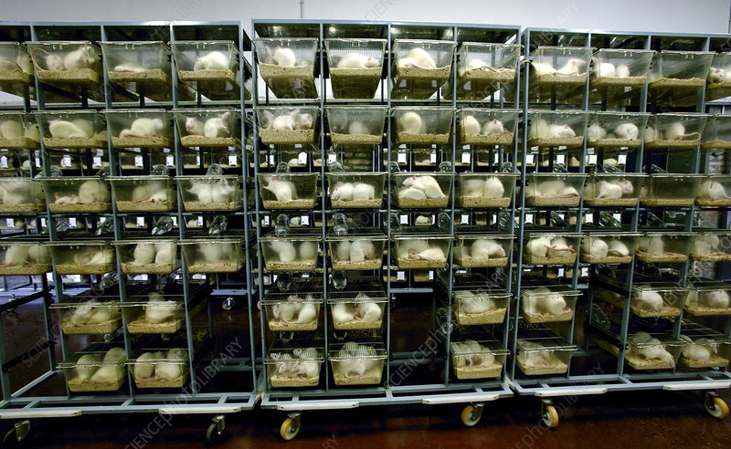
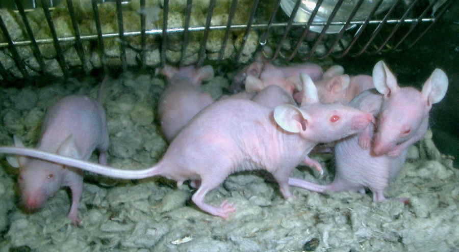

The term “animal testing” refers to procedures performed on living animals for purposes of research into basic biology and diseases, assessing the effectiveness of new medicinal products, and testing the human health and/or environmental safety of consumer and industry products such as cosmetics, household cleaners, food additives, pharmaceuticals and industrial/agro-chemicals. All procedures, even those classified as “mild,” have the potential to cause the animals physical as well as psychological distress and suffering. Often the procedures can cause a great deal of suffering. Most animals are killed at the end of an experiment, but some may be re-used in subsequent experiments . Proponents of animal testing say that it has enabled the development of many life-saving treatments for both humans and animals, that there is no alternative method for researching a complete living organism, and that strict regulations prevent the mistreatment of animals in laboratories.
Animals used in experiments include baboons, cats, cows, dogs , ferrets, fish, frogs, guinea pigs, hamsters, horses, llamas, rats , monkeys (such as marmosets and macaques), owls, pigs, quail, rabbits, rats and sheep.
Chimpanzees have thankfully not been subjected to invasive experiments in the U.S. since 2015, when federal decisions were made to prevent their use. Despite this, hundreds of chimpanzees are still languishing in laboratories while they wait to be moved into sanctuaries.
🐁 🐁 🐁 🐁



The laboratory rat is an inevitable part of today's biomedical research. They are recognized as the preeminent model in numerous fields, including neurobehavioral studies, cancer and toxicology. It is difficult to evaluate the number of animals employed in scientific experiments every year. An estimation suggests some dozens of millions per year, being 15 million in the United States, 11 million in Europe, five million in Japan, two million in Canada and less than one million in Australia. Almost 80% of the experimental animals are rodents that include mice, rats, guinea pigs and others (10% are fish, amphibians, reptiles and birds). A third group includes rabbits, goats, bulls and in smaller amounts, dogs, cats and some species of primatess. They substitute the human being as an experimental object in scientific researches. Among the rodents, rats are the mostly used animals for experimental purposes (accounting for approximately 20% of the total number of mammals used for scientific purposes), followed by mouse, rabbit, dog, pig and primate, especially for in vivo studies. About 85% of the articles in Medline, and 70.5% of the articles in Lilacs, employed rats and mice. All over the past 80 years, rats have been utilized in investigations in almost every aspect of biomedical and behavioral research. A recent publication dealing with biomedical research applications lists the following areas of biomedical investigation as ones in which the rat is widely used and is particularly useful in: Toxicology, teratology, experimental oncology, experimental gerontology, cardiovascular research, immunology, dental research immunogenetics and experimental parasitology. The rat is also the most widely used laboratory mammal in behavioral studies, for which, incidentally, the mouse is not well suited. Rats have traditionally been the animal of choice in much nutritional research, although it should be noted that their natural habit of coprophagy may limit their suitability for certain of these studies.
🐒 🐒 🐒 🐒

A large part of the experimental research at KI is carried out in test tubes or cell cultures, for example. Monkeys are only used in animal experiments when other methods or animal species cannot be used. They are mainly used in studies of diseases of the brain, and in experiments for the development of vaccines or treatments of severe infectious diseases. A large part of the experimental research is done in test tubes or cell cultures, for example, but it is not yet possible to replace all use of lab animals. Animal experiments are needed, for example, to evaluate if treatments and medicines affect other processes in the body.In addition to vaccine research, monkeys are also used in research with a so-called positron emission tomography (PET) camera where extensive progress has been made, especially in research on the structure and functions of the brain. This technology is also very important for locating tumours and developing new medications. This is very important research to develop medicines for various neurological disorders, such as Alzheimer’s, Parkinson’s, schizophrenia and other mental disorders.A 2006 study from the Department of Physiology used 5 female rhesus monkeys (origin unknown). The animals were starved over a 10 month period (to bring about weight reductions ranging from 23-46% of body weight) until they ceased menstruation (amenorrhea). Then their food intake was increased until they resumed ovulation. Two years after the end of the experiment, the monkeys are once again in “good health”, including the monkey who lost her hair during the experiment, but has since regrown it. This study demonstrated that starvation inhibits ovulation in rhesus monkeys. The researchers say “This model will be useful for studying the neuroendocrine mechanisms involved in diet-induced anovulation in primates”.
🐕 🐕 🐕 🐕


Dogs are often used in biomedical research investigating heart and lung disease, cancer, and orthopedics. They are also used in toxicity studies to test the safety of drugs and industrial chemicals, but are rarely used to assess the safety of personal care and household products. Most dogs used in research are purpose-bred in laboratories or by private companies that sell strictly to labs. Dogs can be bred to be pathogen-free or genetically manipulated to be a model of human disease.
The most common breed of dog used for experiments are beagles, but not because scientists view them as the best model for human disease. Rather, beagles are convenient to use because they are docile and small, allowing for more animals to be housed and cared for using less space and money.
dogs older than four months of age are identified with a tag or may have an ID number tattooed in their ear. They are housed in spaces depending on their weight, according to recommendations made by The Guide for the Care and Use of Laboratory Animals. It is recommended that dogs less than 33 pounds have a minimum floor area of eight square feet per animal; dogs up to 66 pounds have a minimum floor area of 12 square feet per animal; and dogs more than 60 pounds have a minimum floor area of 24 square feet per animal. The Guide also recommends that cage height be sufficient for the animals to be comfortable standing with their feet on the floor.
The California Biomedical Research Association states that nearly every medical breakthrough in the last 100 years has resulted directly from research using animals. Animal research has contributed to major advances in treating conditions such as Breast_cancer , brain injury , childhood leukemia, Cystic fibrosis, multiple sclerosis, tuberculosis, and more, and was instrumental in the development of pacemakers, cardiac valve substitutes, and anesthetics.
Scientists racing to develop a vaccine for coronavirus during the 2020 global pandemic need to test on genetically modified mice to ensure that the vaccine doesn’t make the virus worse. Nikolai Petrovsky, professor in the College of Medicine and Public Health at Flinders University in Australia, said testing a coronavirus vaccine on animals is “absolutely essential” and skipping that step would be “fraught with difficulty and danger.”
Researchers have to test extensively to prevent “vaccine enhancement,” a situation in which a vaccine actually makes the disease worse in some people. Peter Hotez, Dean for the National School of Tropical Medicine at Baylor College, said, “The way you reduce that risk is first you show it does not occur in laboratory animals.
Chimpanzees share 99% of their DNA with humans, and mice are 98% genetically similar to humans. All mammals, including humans, are descended from common ancestors, and all have the same set of organs (heart, kidneys, lungs, etc.) that function in essentially the same way with the help of a bloodstream and central nervous system. Because animals and humans are so biologically similar, they are susceptible to many of the same conditions and illnesses, including heart disease, cancer, and diabetes.
mice, rats, frogs, dogs, cats, rabbits, hamsters, guinea pigs, monkeys, fish, and birds—are killed. laboratories for biology lessons, medical training, curiosity-driven experimentation, and chemical, drug, food, and cosmetics testing. Before their deaths, some are forced to inhale toxic fumes, others are immobilized in restraint devices for hours, some have holes drilled into their skulls, and others have their skin burned off or their spinal cords crushed. In addition to the torment of the actual experiments, animals in laboratories are deprived of everything that is natural and important to them—they are confined to barren cages, socially isolated, and psychologically traumatized. The thinking, feeling animals who are used in experiments are treated like nothing more than disposable laboratory equipment.
The Animal Welfare Act (AWA) does not apply to rats, mice, fish, and birds, which account for 95% of the animals used in research. The types of animals covered by the AWA account for fewer than one million animals used in research facilities each year, which leaves around 25 million other animals without protection from mistreatment. The US Department of Agriculture, which inspects facilities for AWA compliance, compiles annual statistics on animal testing but they only include data on the small percentage of animals subject to the Act.
A peer-reviewed study found serious flaws in the majority of publicly funded US and UK animal studies using rodents and primates: “only 59% of the studies stated the hypothesis or objective of the study and the number and characteristics of the animals used.” A 2017 study found further flaws in animal studies, including “incorrect data interpretation, unforeseen technical issues, incorrectly constituted (or absent) control groups, selective data reporting, inadequate or varying software systems, and blatant fraud.
 


